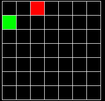
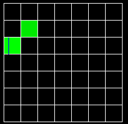
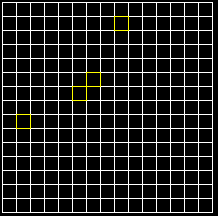
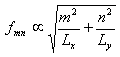

This java applet is a simulation that demonstrates wave motion in a perfectly elastic rectangular membrane (like a drum head, except rectangular instead of round), showing its various vibrational modes.
An ideal continuous membrane has an infinite number of modes of oscillation, each with its own frequency. The lowest-frequency mode is called the fundamental, and involves the entire membrane vibrating up and down at a frequency determined by the membrane's size, tension, and mass. The other modes involve parts of the membrane (called nodal lines) standing still while the rest of the membrane vibrates. When a membrane is vibrating, more than one mode is typically present at once.
At the top of the applet on the left you will see the membrane. To set it in motion, click Fundamental. If you click Clear, it will be at rest again.
Below the membrane you will see a graph showing each normal mode's contribution to the membrane's vibration. The modes are laid out in the following order:
| 1,1 | 2,1 | 3,1 | ... |
| 1,2 | 2,2 | 3,2 | ... |
| 1,3 | 2,3 | 3,3 | ... |
| ... | ... | ... | ... |
where m,n refers to the mode having a shape proportional to sin(mx)sin(ny), where x ranges from 0 to pi. So, mode 1,1 has one "bump" and does not have any nodal lines. Mode 3,2 has six bumps (3 in the x direction and 2 in the y direction), so it has two nodal lines crossing the x axis and one nodal line crossing the y axis. In general, mode m,n has m*n bumps, m-1 nodal lines crossing the x axis, and n-1 nodal lines crossing the y axis.
Normally the edges of the membrane are fixed. If the Fixed Edges checkbox is turned off, then the edges are free to vibrate, and this causes a new set of modes to be available:
| 1,0 | 2,0 | ... | |
| 0,1 | 1,1 | 2,1 | ... |
| 0,2 | 1,2 | 2,2 | ... |
| ... | ... | ... | ... |
where m,n refers to the mode having a shape proportional to cos(mx)cos(ny). Modes 0,n are constant in the x direction and modes m,0 are constant in the y direction. The slot for 0,0 is left empty because this is simply a constant factor added to the height of the membrane. This constant is always 0 in this applet.
Each element of the grid has a color which indicates the presence or absence of the mode it represents. Black means the mode is not present; green means the mode is present with a positive coefficient, and red means it is present with a negative coefficient. So in this example, mode 1,2 has a positive coefficient, mode 3,1 has a negative one, and the rest of the modes are absent:

In addition, each mode may have a phase shift, which indicates that its oscillatory cycle leads or lags the others. This is indicated by a blue line. In this example, mode 1,3 has a blue line about 1/3 of the way across the width of the box, which means a phase shift of about 1/3 the maximum possible. The maximum is pi*2, so this shift is pi*2/3. Mode 2,2 is also present but does not have a phase shift.

A phase shift is normally hard to detect. If the applet is stopped, then by altering the phase of a mode you can see the mode oscillate up and down. If the applet is running it is much harder to tell, except in a case which will be explained later.
You can add or remove a mode by clicking on it. If you click and drag up and down you can fine-tune the magnitude of the mode. If you drag left and right you can alter the phase shift.
You can modify the membrane in one of two ways. You can modify the normal modes. Or you can click on it directly and drag the mouse up or down; it will be "poked" at that point.
The Mouse popup controls what happens when you click on the membrane. The default setting is Poke membrane, which causes the membrane to be deformed at the point where you click. If you set the popup to Shape membrane, you can edit the displacement of each individual point.
If you set it to Adjust view angle or Adjust view zoom, you can adjust the orientation or size of the 3-d view. And if you set it to Show mode, and then click on one of the modes in the frequency grid, it will show the shape of that mode.
The Display popup can be used to control whether the 3-d or 2-d view is shown. By default it is set to Display 3-d Only. To show a 2-d representation, you can select Display 2d Only or Display 3d+2d. The 2-d representation often gives you a clearer picture of what is going on. Also the Mouse = Shape membrane popup menu item can be used to alter multiple points on the membrane at once by drawing on the 2-d representation.
The 3d View popup can be used to control the look of the 3-d view. By default it is set to Solid, but you can also see a wireframe view by selecting one of the other options.
The Stopped checkbox can be used to stop the motion of the membrane for a moment.
The Show Frequencies checkbox can be used to show or hide the frequency grid. By default, it is shown.
The Color checkbox can be used to turn off color. This may look better and/or it may make the applet run faster.
The Simulation Speed slider controls how fast the simulation will proceed.
The Damping slider controls how much damping there is. Damping is a force that slows the membrane down. High harmonics are damped more than lower ones. The default setting is set to zero, so you may want to set this higher in order to get more realistic behavior.
The Brightness slider controls the brightness, just like on a TV set. This can be used to view faint waves more easily.
The Resolution slider will adjust the fineness of the rendering. This can be set lower to speed up the applet.
The Aspect Ratio slider will adjust the width of the membrane.
Normally each mode has a different frequency. However in some cases, several modes can have the same frequency. This is called degeneracy. The presence or absence of degeneracy depends on the aspect ratio of the membrane, which is its width relative to its length. This is controlled by the Aspect Ratio slider. By default it is equal to one, which means the membrane is square. In this case, all the m,n modes are degenerate, because they have the same frequency as the n,m modes. If the aspect ratio is not equal to one, there usually is no degeneracy. There may be some if the aspect ratio is equal to an integer or a simple fraction. The aspect ratio slider ranges from 1/2 to 3, so in either of those cases there will be some degeneracy.
When two or more modes have the same frequency, each one is shown in yellow, like so:

The interesting thing about degenerate modes is that if you combine them, you get a new mode that oscillates with simple harmonic motion, just like any other mode. Since both modes are oscillating at the same rate, you can't tell them apart. If one of the modes has a phase shift relative to the other one, then the membrane will change shape at a rate equal to the frequency of the modes.
The frequencies are proportional to:

where Lx is the length of the membrane in the x direction and Ly is the length of the membrane in the y direction. So in the example grid shown above, modes (9,2) have the same frequency as (2,9), (6,7), and (7,6), so all modes are shown in yellow. This makes sense if the membrane is square. In this case, Lx = Ly, and 22 + 92 = 62 + 72 = 72 + 62 = 92 + 22 = 85.